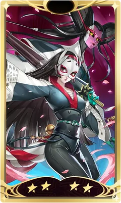

WIND Riko Tanemura
Fonte: https://lufel.net/en/character/wind/ · letto il 2026-11-15 con il browser integrato (spoiler attivi) · Stato Global: rilasciata. Convenzione: nomi di skill, awareness, armi, Persona, set e stat lasciati in inglese come su lufel.net; condizioni ed effetti tradotti in italiano. Valori skill (personaggio 4★) = LV10 / LV10+Minds 5 / LV12 / LV12+Minds 5. Valori armi = refinement R0/R1/R2/R3/R4/R5/R6.
Scheda#
| Campo | Valore |
|---|---|
| Nome | Riko Tanemura |
| Codename | WIND |
| Persona | Chiyome |
| Rarità / tipo | 4★ · Standard (ottenibile dalla storia / contratti) |
| Elemento | Buff (Navigator/Elucidator, nessun elemento d'attacco) |
| Posizione | Elucidator |
| Ruolo (lufel) | One More/All-out Attack Support |
| Tag (lufel) | Defense Reduction · Damage Taken · Damage Mult · Eludi. Stat Buff |
| Resistenza / Debolezza | non indicate (Elucidator) |
Character Review (lufel)#
- Introdotta nella versione 2.0, Riko è un membro dei Phantom Thieves ottenibile tramite la storia, e può anche essere acquisita subito tramite i contratti personaggio indipendentemente dall'avanzamento dello sblocco.
- Può applicare un Mark (Insight) ai nemici e, quando il mark viene rimosso con un attacco normale o su debolezza, riduce ulteriormente la Guard e attiva il DOWN.
- Poiché il DOWN può essere attivato anche senza colpire una debolezza, permette un uso più frequente di ONE MORE e All-Out Attack.
- Anche le sue passive sono progettate per potenziare ONE MORE e All-Out Attack, rendendola molto utile per le missioni della Velvet Room.
- Ha inoltre una buona utilità nel kit: un debuff dalla Skill 1, cura alleati e buff al danno dalla Skill 3, e una Skill 2 che si attiva automaticamente.
Pro - Può ridurre lo stato DOWN anche con un attacco non su debolezza. - Potenzia All-Out Attack e ONE MORE. - Ha un effetto di riduzione della difesa su stat importanti.
Contro - Poiché la Speed è la stat principale, l'effetto della skill Stat Buff è ridotto.
Recommended Setup (lufel)#
Nota lufel: le impostazioni consigliate sono basate su contenuti futuri; alcune funzioni potrebbero non essere ancora disponibili (Revelation, Mindscape, ecc.).
- Revelation — Space: Resolve (tooltip "Resolve - Labor": se equipaggiata da Navigator Thieves, riduce la DEF del bersaglio principale del 10% per 2 turni quando applica debuff) · oppure Integrity (tooltip "Integrity - Labor": se equipaggiata da Navigator Thieves, aumenta HP, ATK e DEF di tutti gli alleati di un ulteriore 2% per ogni alleato dello stesso elemento) · Sun/Moon/Star/Sky: Labor ×4 (2-Set: HP +12% · 4-Set: se equipaggiato da Navigator Thieves, HP, ATK e DEF di tutti gli alleati +8%)
- Main Options — Sun: HP · Moon: Attack / Damage Mult · Star: Crit Mult / Crit Rate · Sky: Speed
- Sub Options — 1ª priorità: Speed · 2ª: Crit Rate / Crit Mult · 3ª: Attack / Damage Mult
- Recommended Stats — LV12: Speed 170 · LV12+Minds 5: Speed 180
- Battle Entry + — Thieves Den +1 (o più) · Thieves Den Rating
- Priorità skill — 1º Skill 3 · 2º Skill 1 · 3º Skill 2 (tutte MAX) · Highlight: "-" (gli Elucidator non hanno Highlight)
- Mindscape (LV 5) — Rank Strengthening 1: HP 20% · Rank Strengthening 2: Attack 20% · Skill Enforce 1: Skill1 / Skill2 · Skill Enforce 2: Skill3
- Skill Rotation — A0: - › 1 › 3 › - › 1 › 3 · A6: - › 1 › 3 › 1 › 3 › 3 ("-" = nessuna skill disponibile/da usare in quello slot)
- Notes (lufel) — La Skill 2 si attiva automaticamente, quindi non usarla.
Skills (LV10 / LV10+Minds 5 / LV12 / LV12+Minds 5)#
Skill 1 — Scattered Plum Blossoms (cooldown 4 azioni alleate) Riduce la Defense di tutti i nemici del 10.0%/10.0%/10.8%/10.8% per 2 turni. Quando la Speed di Riko è 100 o più, riduce la Defense del 4.9% ogni 10 punti di Speed oltre 100, fino al 29.4%/32.3%/31.8%/34.7%. Applica inoltre Insight al bersaglio principale. Cooldown: 4 azioni alleate.
Skill 2 — Dreams in the Mist (cooldown 8 azioni alleate) Aumenta il danno subito da tutti i nemici del 10.5%/11.6%/11.3%/12.4% per 2 turni. Quando un alleato riduce i Down Point di un nemico o lo atterra, il cooldown diminuisce di 1. Quando il cooldown arriva a 0, la skill si attiva. Cooldown: 8 azioni alleate.
Skill 3 — Verngale Petals (cooldown 8 azioni alleate) Spende tutti gli stack di Intel per concedere Fair Winds al party per 1 turno e ripristinare gli HP dell'alleato bersaglio del 12.7%/12.7%/13.7%/13.7%. Fair Winds: danno ai nemici +12.6%/13.9%/13.6%/14.9%; aumenta ulteriormente in base alla Speed di Riko e al numero di stack di Intel spesi. Se la Speed di Riko è 100 o più, danno +1.05% ogni 10 punti di Speed oltre 100, fino al 6.3%/6.9%/6.8%/7.4%. Cooldown: 8 azioni alleate (non usabile con meno di 5 Intel).
Stat Buff (passiva da Elucidator): aumenta le stat corrispondenti di tutti gli alleati del 15% delle stat del Phantom Thief rivelato.
Passiva — Springtime Tempest: all'inizio della battaglia, se la Speed di Riko è 100 o più, aumenta HP del party di 6, Attack di 2 e Defense di 2 per ogni punto di Speed oltre 100. HP fino a 360, Attack fino a 120, Defense fino a 120.
Passiva — Plum Blossom Glory: danno di 1 More e All-Out Attack +60.0%.
Awareness#
- A0 — Snowfall Fragrance (talento base): ogni 3 azioni alleate, applica Insight al nemico con più Down Point. Attaccando un nemico con Insight, spende i suoi stack di Insight per concedere Intel a Riko. Insight: prossimo danno subito +6%. Quando viene attaccato, Riko ottiene 2 stack di Intel. Quando subisce danno su debolezza o di affinità normale, Down Point −1. Quando riduce i Down Point, Riko ottiene 1 stack di Intel in più. Intel si cumula fino a 8 volte.
- A1 — Spring Squall: all'inizio della battaglia, applica Insight al nemico con più Down Point.
- A2 — Ethereal Scent: dopo Verngale Petals, applica Insight al nemico con più Down Point.
- A3 — Harmonious Fragrance: aumenta di 2 i livelli di skill di Scattered Plum Blossoms e Dreams in the Mist.
- A4 — One Thousand Blossoms: quando un alleato usa un Highlight, applica Insight al nemico con più Down Point.
- A5 — Balance and Harmony: aumenta di 2 il livello di skill di Verngale Petals.
- A6 — Majesty: se la Speed di Riko è 100 o più, usando Verngale Petals riduce il cooldown ogni 15 punti di Speed oltre 100, fino a 4 azioni.
Stats#
- Base (LV1): HP 232 · ATK 69 · DEF 40 · Speed 105
- Hidden Ability LV7: Speed 119.1
- LV80 (HP / ATK / DEF): A0 2610 / 780 / 455 · A1 2640 / 789 / 461 · A2 2670 / 798 / 466 · A3 2700 / 807 / 471 · A4 2731 / 816 / 476 · A5 2760 / 825 / 482 · A6 2791 / 834 / 487
Armi esclusive (valori R0/R1/R2/R3/R4/R5/R6)#
5★ Kunoichi: Sky's Edge — HP 2299 · ATK 687 · DEF 401 — passiva Shadow Dance - Aumenta la Speed di 15.0/15.0/20.0/20.0/25.0/25.0/30.0. - Ogni 2 stack di Insight spesi, ottiene 2/3/3/4/4/5/5 stack di Intel. - Inoltre danno del party +6.0%/7.8%/7.8%/9.6%/9.6%/11.4%/11.4% per 1 turno. - Aumenta gli stack massimi di Intel a 11/12/12/13/13/14/14.
4★ Moonlight Needle — HP 1839 · ATK 550 · DEF 320 — passiva Reflected Moon - Aumenta l'Attack del 12.0%/12.0%/16.0%/16.0%/20.0%/20.0%/24.0%. - Per ogni stack di Insight speso, aumenta permanentemente l'Attack del party del 3.5%/4.6%/4.6%/5.7%/5.7%/6.8%/6.8%; fino a 5 stack.
Red Plum Blossom (EVENT) — HP 1982 · ATK 550 · DEF 285 — passiva In Bud - Aumenta la Speed di 4.6/4.6/5.9/5.9/7.2/7.2/8.5. - Per ogni stack di Insight speso, concede casualmente al party 1 dei seguenti effetti: Attack +7.0%/9.0%/9.0%/11.0%/11.0%/13.0%/13.0% (2 turni) · Defense +11.0%/14.0%/14.0%/17.0%/17.0%/20.0%/20.0% (2 turni) · HP massimi +7.0%/9.0%/9.0%/11.0%/11.0%/13.0%/13.0% (2 turni). - Inoltre 5.0%/6.7%/6.7%/8.3%/8.3%/10.0%/10.0% di probabilità di ottenere 1 stack di Intel.
Attribute Mindscape (lufel: introdotto in KR V5.2, forse non ancora su Global)#
- Mindscape Synergy: nessuna consigliata (slot vuoto su lufel).
- Mindscape Combat Skill: nessuna consigliata (slot vuoto su lufel).
Recommended Combination (lufel)#
- Sezione non presente nella pagina lufel di questo personaggio.
Recommended Parties (lufel)#
- Sezione "Recommended Parties Example" presente ma vuota nella pagina lufel (nessun party elencato).
Nomenclatura#
- lufel: "Riko Tanemura" (codename WIND; la versione alternativa è WIND·Tempest, guida separata), slug URL
wind. Stati/risorse: Insight (il "Mark" della review), Intel, Fair Winds. - Nelle descrizioni lufel "1 More" = ONE MORE.